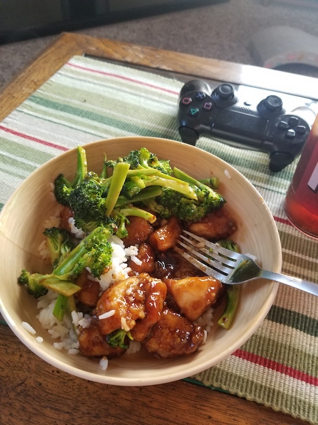

Description
One of life's simplest pleasures is ordering unhealthy portions of chinese takeout that comes with it's own "free" microwave un-safe tupperware and enough MSG to finally make you feel something. Unfortunately, a good majority of Chinese Restaraunts utilize peanut oil to fry up their goods. This makes their food delicious. Unfortunately it also makes their food incredibly deadly to people with nut allergies, such as my lovely girlfriend.
Because of this allergy, I was forced to choose between two things that I love so very much. It was a real "Love, or Lamian" situation. For months I wrestled with this painful peanut-based dilemma. Even worse was the realization that my girlfriend was never going to experience the mind-expanding flavors that accompanied a perfectly cooked (but maybe a bit too bready) dish of General Tso's Chicken.
But then it hit me. It didn't have to be this way. After all, I knew how to cook things (sort of), and I had the means to do it. I even knew how to use google to find recipes for things that I wanted to eat. Most importantly, I was dating someone who had never eaten General Tso's chicken... SOMETHING had to change.
So anyway, we googled a recipe that didn't involve peanuts, and after having cooked it a half dozen times, we are now are confident that it won't be a disaster if we feed it to other people. I feel ready to share our slightly revised recipe (but mostly total rip-off) of another one that we found online.
Ingredients
For the chicken
- 1 pound chicken thighs cut into 1 inch chunks
- 1/4 cup cornstarch
- oil for frying
- 1 tablespoon minced ginger
- 1/2 teaspoon red chili flakes
- 2 cloves garlic minced
For the sauce
- 3 tablespoons rice vinegar
- 2 teaspoons hoisin sauce
- 1/4 cup water
- 3 tablespoons sugar
- 1 tablespoon cornstarch
Steps
- Toss the chicken thighs with the quarter cup of cornstarch and let sit while you mix the sauce ingredients.
- Add the rice vinegar, soy sauce, hoisin sauce, water, sugar and tablespoon of cornstarch in a small bowl and whisk together.
- Add the chicken to a pan with the oil and fry until crispy.
- Remove chicken from the pan and drain all but a tablespoon of the oil and add the chili flakes, ginger and garlic.
- Cook until you smell the garlic (about 30 seconds)
- Add in the chicken and toss, then add in the sauce.
- Serve immediately
- If you thinly chop some brocolli, you can fry the brocolli in the leftover sauce on the pan once you've taken out the majority of the chicken. I promise you it will be the best improvised stir-fry brocolli you've ever head.
Notes
- For the full "Chinese Restaraunt" experience, make some rice and brocolli to tie it all together.
- Put the saucy chicken in a bowl over the rice and brocolli.
- This isn't going to perfectly recreate the true taste of "Authentic"General Tso's from your local Chinese joint, so don't expect that to be the case.
- However, this still tastes really good, and the best part is that it won't kill anyone who is allergic to peanuts!
Back To Main Menu